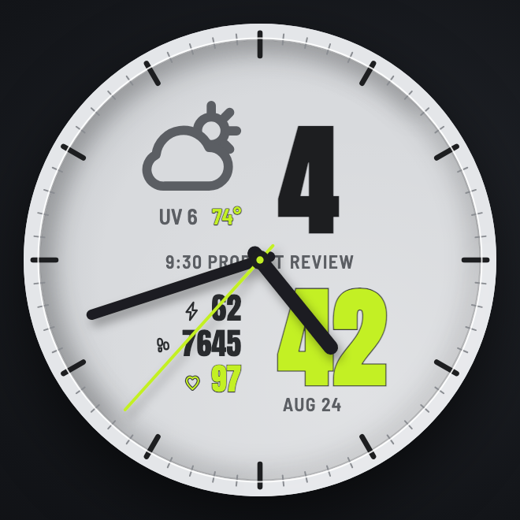

A bold hybrid of analog and digital for Garmin Forerunner. Big split digits, weather and UV up top, your next meeting on the center line, and three data rows you choose.
Get it on Connect IQ Connect Calendar
Real hands over big display digits split around the center line. Hands can be turned off.
Current conditions icon with temperature and UV index at a glance.
Your next meeting today, time and title, right on the dial. Updates in the background.
Pick any of body battery, steps, heart rate, calories, watch battery, distance, floors, or stress.
Volt, Orange, Blue, or Purple. The minutes, temperature, and heart rate carry the accent.
Clean, dim AOD with tick stubs, time, and date. Easy on the battery.
Read-only calendar access. Tokens stay on your watch. No server in between.